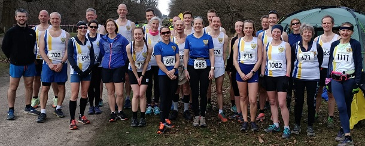

The sixth and final race in the 2021/22 Kent Fitness League series took place in Knole Park on Sunday March 20th, writes Jim Knight. In beautiful sunny conditions the 326 competitors from 18 Kent athletics clubs tackled a gruelling 5 mile course up and down Knole’s hills. Sevenoaks AC athletes performed brilliantly. Paul Freeman-Jones won the men’s race and Andrea Berquez won the women’s race.
In the team competition, Sevenoaks’ women claimed a narrow victory over Canterbury Harriers, to confirm their victory in the series – champions for the second year in a row. An outstanding achievement. Scoring runners in Knole were Andrea Berquez (1st), Hannah Sangan (6th), Vanessa Gilmartin (7th), and Pauline Dalton (26th).
Great performances in the whole series came from Cath Linney W50 champion, Pauline Dalton W55 champion, Bridget Weekes 2nd W60, and Sally Shewell 3rd W60.
The men’s team was missing several key runners through Covid and injury, but still managed a creditable 4th position. Scoring runners were Paul Freeman-Jones (1st), James Mason (4th), Ed Saunders (21st), Andrew Hutchinson (28th), William Palmer (45th), Andrew Mead (46th), Chris Desmond (149th) and Lionel Stielow (191st).
In the series, Andrew Hutchinson finished 6th M40, Andrew Mead 10th M50, and Harvey Taylor 2nd under 20.
The full Sevenoaks AC results were:
| Ov Pos | Lg Pos | Bib | Runner | Age | Time | Club | Score | Rtg | # |
|---|---|---|---|---|---|---|---|---|---|
| 1 | 1 | 1112 | Paul Freeman-Jones | 29 | 28:42 | Sevenoaks AC | M1 | 100.00 | Debut |
| 4 | 4 | 674 | James Mason | 39 | 29:08 | Sevenoaks AC | M2 | 98.53 | 15 |
| 21 | 21 | 688 | Edmund Saunders | 39 | 31:34 | Sevenoaks AC | M3 | 90.20 | 17 |
| 28 | 28 | 665 | Andrew Hutchinson | 42 | 32:10 | Sevenoaks AC | V40:1 | 86.76 | 16 |
| 33 | 1 | 912 | Andrea Berquez | 36 | 32:25 | Sevenoaks AC | V35 | 100.00 | 3 |
| 40 | 39 | 652 | Chris Fenn | 31 | 32:51 | Sevenoaks AC | NSBLS | 81.37 | 5 |
| 46 | 45 | 1084 | William Palmer | 49 | 33:11 | Sevenoaks AC | V40:2 | 78.43 | Debut |
| 47 | 46 | 675 | Andrew Mead | 53 | 33:27 | Sevenoaks AC | V50:1 | 77.94 | 43 |
| 48 | 47 | 694 | Harvey Taylor | 17 | 33:29 | Sevenoaks AC | NSBLS | 77.45 | 6 |
| 64 | 61 | 678 | Shaun Mullen | 45 | 34:12 | Sevenoaks AC | NSBLS | 70.59 | 8 |
| 73 | 70 | 680 | Sebastian Naughton | 48 | 35:16 | Sevenoaks AC | NSBLS | 66.18 | 4 |
| 76 | 73 | 703 | Tim Young | 49 | 35:27 | Sevenoaks AC | NSBLS | 64.71 | 5 |
| 77 | 74 | 914 | Nicholas Mileham | 41 | 35:30 | Sevenoaks AC | NSBLS | 64.22 | 2 |
| 87 | 6 | 916 | Hannah Sangan | 28 | 36:20 | Sevenoaks AC | F1 | 95.90 | 4 |
| 88 | 7 | 657 | Vanessa Gilmartin | 46 | 36:21 | Sevenoaks AC | V45 | 95.08 | 21 |
| 90 | 82 | 1083 | David Killpack | 36 | 36:30 | Sevenoaks AC | NSBLS | 60.29 | Debut |
| 96 | 9 | 647 | Julia Davis | 24 | 36:38 | Sevenoaks AC | NSBLS | 93.44 | 6 |
| 104 | 13 | 1082 | Caroline Fenwick | 44 | 36:51 | Sevenoaks AC | NSBLS | 90.16 | Debut |
| 116 | 19 | 915 | Rebecca Pickard | 46 | 37:30 | Sevenoaks AC | NSBLS | 85.25 | 3 |
| 135 | 26 | 645 | Pauline Dalton | 57 | 38:26 | Sevenoaks AC | V55 | 79.51 | 54 |
| 167 | 37 | 699 | Bridgit Weekes | 64 | 40:16 | Sevenoaks AC | NS | 70.49 | 16 |
| 185 | 45 | 691 | Sarah Shewell | 62 | 41:28 | Sevenoaks AC | NS | 63.93 | 117 |
| 200 | 149 | 649 | Chris Desmond | 59 | 42:31 | Sevenoaks AC | V50:2 | 27.45 | 82 |
| 221 | 62 | 704 | Samantha Znetyniak | 46 | 43:51 | Sevenoaks AC | NS | 50.00 | 8 |
| 225 | 64 | 700 | Lucy Wilkes | 42 | 44:04 | Sevenoaks AC | NS | 48.36 | 5 |
| 236 | 70 | 685 | Ella Pyman | 55 | 45:25 | Sevenoaks AC | NS | 43.44 | 17 |
| 290 | 191 | 693 | Lionel Stielow | 73 | 50:51 | Sevenoaks AC | V60 | 6.86 | 20 |
| 293 | 102 | 1111 | Mandy Lock | 60 | 51:19 | Sevenoaks AC | NS | 17.21 | Debut |
| 318 | 116 | 671 | Sylvia Lewis | 69 | 1:01:57 | Sevenoaks AC | NS | 5.74 | 23 |

The Kent Fitness League is a series of cross-country races between the 18 registered Athletics Clubs in Kent. Any number of club members can compete, but 12 are needed to score in the team competition – 8 men (of whom one must be aged 60+, two must be 50+ and two 40+) and 4 women (of whom one must be aged 55+ one 45+ and one 35+). The full results are here.